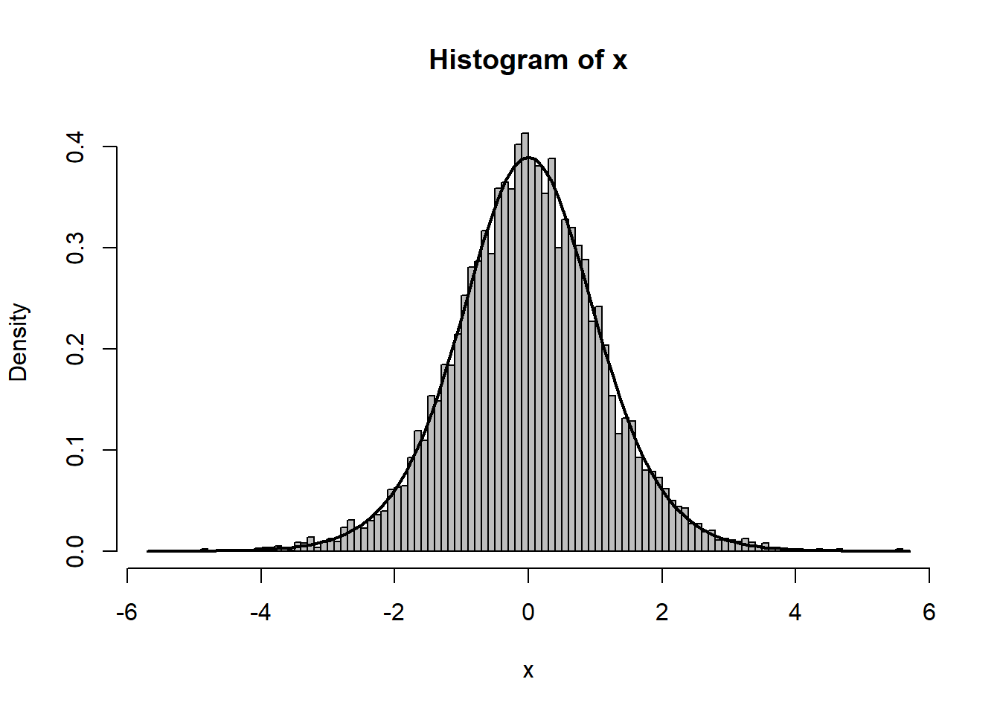
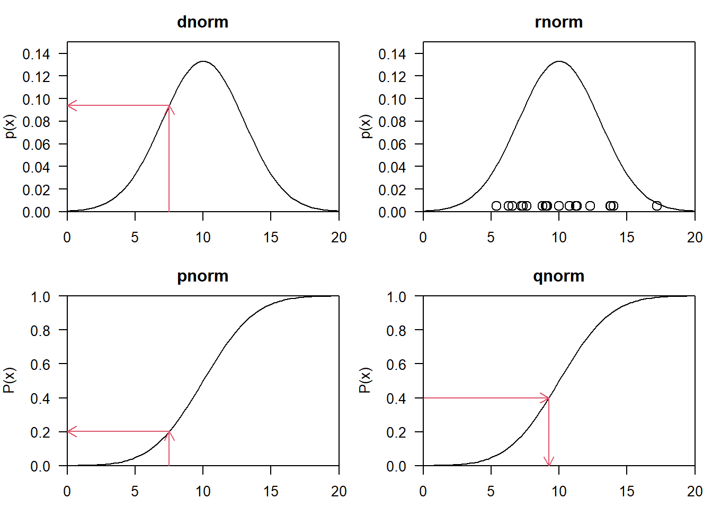
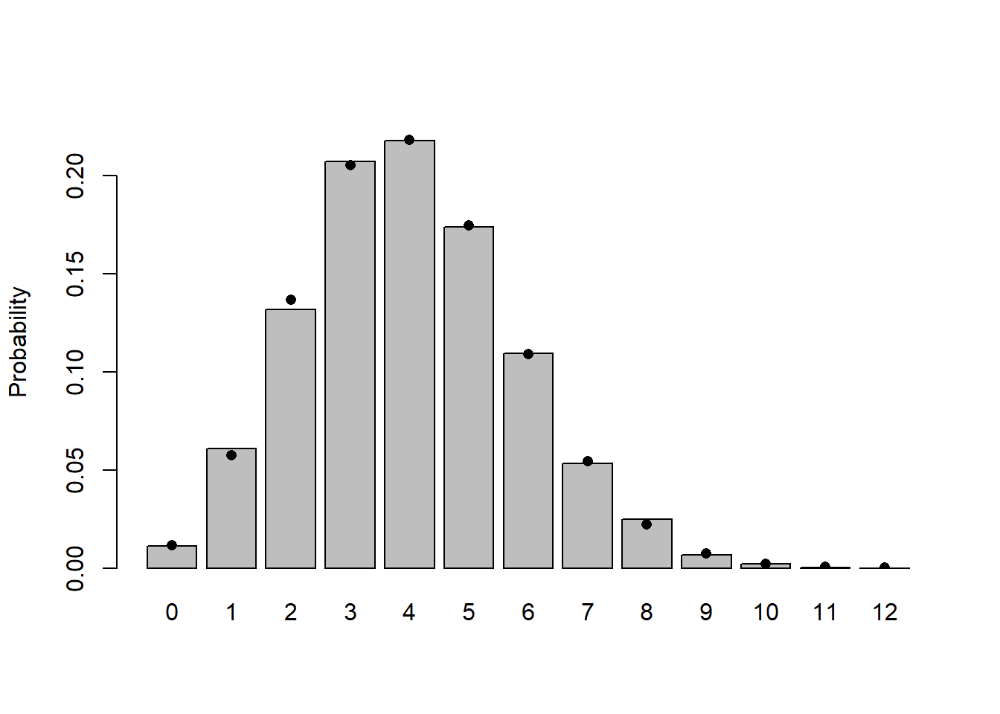
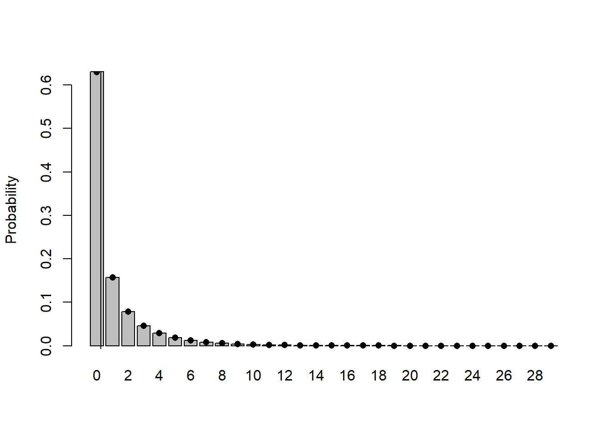
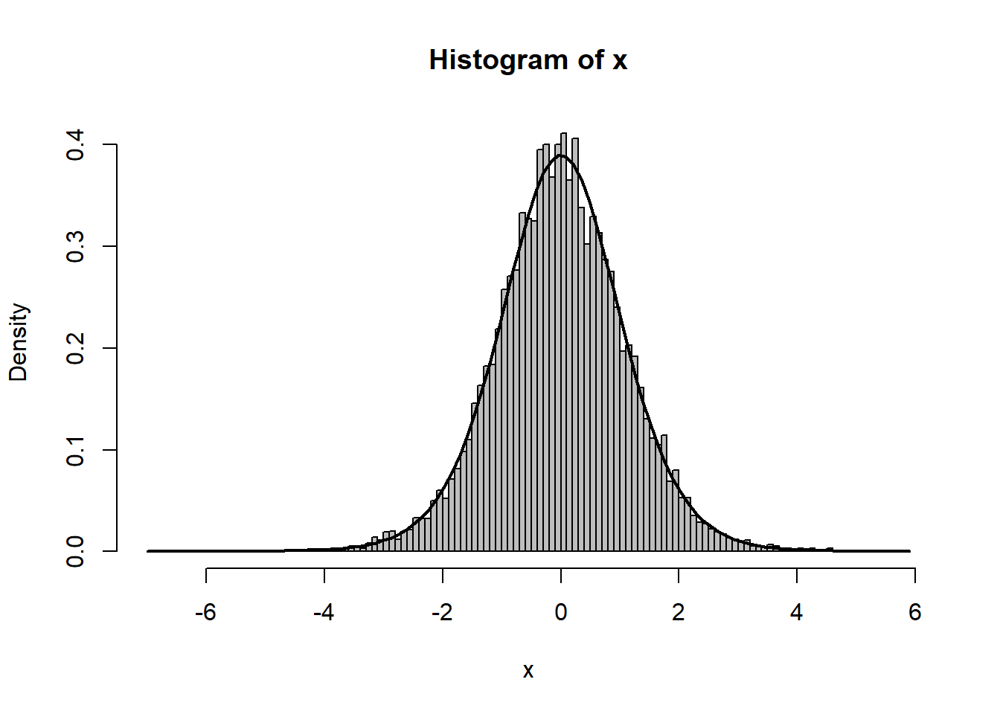

Lab 4: Probability distributions
1 Learning goals
This lab has two goals. First, helps you practicing with probability distributions on different types of data (section 2). Second, to make you familiar with the technicalities of stochastic distributions in R. In particular, how to generate values from probability distributions and how to make your own probability distribution (section 3-7). Under time constraints, make sure that you make at least the exercises in section 2, 3 and 4.
2 Choosing probability distributions
In this exercise we revisit exercise 2.1 of lab 3. In that exercise we had six different datasets each describing a biological phenomenon. The first step to model your data is to choose a deterministic function that describes the mean effect of the predictor variable (x) on the response variable (y). The second step involves the choice of the stochastic distribution which describes how the data varies around the mean.
Exercise 4. 2.1
Solution
Dataset 1 y represents real numbers and both positive and negative numbers occur. This implies that we should choose a continuous probability distribution. In addition, the numbers seems unbound. Within the family of continuous probability distributions, the normal seems a good candidate distribution because this one runs from -\(\inf\) to +\(\inf\). In contrast the Gamma and the Lognormal only can take positive numbers, so these distributions cannot handle the negative numbers. In addition, the beta distribution is not a good candidate because it runs from 0-1.
dataset 2 y represents real numbers and only positive numbers occur. The data represents a functional response (intake rate of the predator), and it is likely that you can only measure positive numbers (number of prey items per unit of time). This implies that we should choose a continuous probability distribution. Within the family of continuous probability distributions, the Gamma and the Lognormal could be taken as candidate distributions because they can only take positive numbers (beware that the Gamma cannot take 0). However, you could try to use a normal as well.
Dataset 3 y seems represents counts (this is the cone dataset that is introduced in ch. 6.). Given that it contains counts we can pick a distribution from the family of discrete distributions. The Poisson and the Negative Binomial could be good candidates to describe this type of data.
Dataset 4 y represents population size over time. From looking at the data, they seems to represent counts. Given that it contains counts we can pick a distribution from the family of discrete distributions. The Poisson and the Negative Binomial could be good candidates to describe this type of data.
Dataset 5 No information is given on y. The data clearly seems to represent counts. Thus the same reasoning applies here as to the two previous datasets.
Dataset 6 The data (y) represents species occurences (presence/absence). The binomial model would be a good model to predict the probability of presence.
3 Random distributions in R
R knows about lots of probability distributions. For each, it can generate random numbers drawn from the distribution (“random numbers”); compute the cumulative distribution function and the probability distribution function; and compute the quantile function, which gives the \(x\) value such that \(\int_0^x P(x) \, dx\) (area under the curve from 0 to \(x\)) is a specified value, such as 0.95 (think about “tail areas” from standard statistics).
Let’s take the binomial distribution (yet again) as an example.
rbinom(n,size,prob)givesnrandom draws from the binomial distribution with parameterssize(total number of draws) andp(probability of success on each draw).
You can give different parameters for each draw. For example:
rbinom(10,size=8,prob=0.5)
rbinom(3,size=8,prob=c(0.2,0.4,0.6))Figure 1 shows the result of drawing 200 values from a binomial distribution with \(N=12\) and \(p=0.5\) and plotting the results as a factor (with 5000 draws we don’t have to worry about any of the 13 possible outcomes getting missed and excluded from the plot):
set.seed(1)
plot(factor(rbinom(5000,size=12,prob=0.5)), xlab="# of successes",
ylab="# of trials out of 200")dbinom(x,size,prob)gives the value of the probability of getting excactly \(x\) successes based on the probability distribution. For a continous distribution, the analogous function would compute the probability density function (pdf). Since the binomial is discrete,xhas to be an integer, and the pdf is just the probability of getting that many successes; if you trydbinomwith a non-integerx, you’ll get zero and a warning.pbinom(q,size,prob)gives the value of the cumulative distribution function (cdf) atq(e.g.pbinom(7,size=10,prob=0.4));qbinom(p,size,prob)gives the quantile function \(x=q(p)\), wherepis a number between 0 and 1 (an area under the pdf, or value of the cdf) and \(x\) is the value such that \(P(X \le x)=p\). The quantile function \(Q\) is the inverse of the cumulative distribution function \(C\): if \(Q(p)=q\) then \(C(q)=p\). Example:qbinom(0.95,size=10,prob=0.4).
These four functions exist for each of the distributions R has built in: e.g. for the normal distribution they’re rnorm(), pnorm(), dnorm(), qnorm(). Each distribution has its own set of parameters (so e.g. pnorm() is pnorm(x,mean=0,sd=1)). See Figure 2 for a graphical illustration of the four functions.To see which distributions are available in the base package; check ?distributions.

rbinom
R functions for the Normal distribution, showing probability density function (dnorm), and cumulative distribution function (pnorm). Random samples are drawn proportionally to the probability density function with rnorm and quantiles are calculated with by inverting the cumulative distribution function with qnorm.Exercise 4. 3.1
For the binomial distribution with 10 trials and a success probability of 0.2:
Pick 8 random values and sort them into increasing order (if you
set.seed(1001)beforehand, you should get \(X=0\) (twice), \(X=2\) (4 times), and \(X=4\) and \(X=5\) (once each)).Calculate the probabilities of getting 3, 4, or 5 successes first by hand (See Ch.4) and check it with the computer. Answer:
Calculate the probability of getting 5 or more successes.
Solution
set.seed(1001) rbinom(8,prob=0.2,size=10)dbinom(3:5,size=10,prob=0.2)pbinom(4,size=10,prob=0.2,lower.tail=FALSE)
You can use the R functions to test your understanding of a distribution and make sure that random draws match up with the theoretical distributions as they should. This procedure is particularly valuable when you’re developing new probability distributions by combining simpler ones, e.g. by zero-inflating or compounding distributions.
The results of a large number of random draws should have the correct moments (mean and variance), and a histogram of those random draws (with freq=FALSE or prob=TRUE) should match up with the theoretical distribution. For example, draws from a binomial distribution with \(p=0.2\) and \(N=20\) should have a mean of approximately \(Np=4\) and a variance of \(Np(1-p)=3.2\):
set.seed(1001)
N=20; p=0.2
x = rbinom(10000,prob=p,size=N)
c(mean(x),var(x))[1] 4.001200 3.144913The mean is very close, the variance is a little bit farther off. Just for the heck of it, we can use the replicate() function to re-do this command many times and see how close we get:
var_dist = replicate(1000,var(rbinom(10000,prob=p,size=N)))(this may take a little while; if it takes too long, lower the number of replicates to 100).
Looking at the summary statistics and at the 2.5% and 97.5% quantiles of the distribution of variances:
summary(var_dist) Min. 1st Qu. Median Mean 3rd Qu. Max.
3.052 3.169 3.199 3.199 3.229 3.340 quantile(var_dist,c(0.025,0.975)) 2.5% 97.5%
3.114357 3.285333 (Try a histogram too.) Even though there’s some variation (of the variance) around the theoretical value, we seem to be doing the right thing since the 95% confidence limits include the theoretical value. (Lab 5 will go into more detail on running simulations to check the expected variation of different measurement as a function of parameters and sample size.)

Finally, Figure 3 shows the entire simulated frequency distribution along with the theoretical values. The steps in R are:
1. pick 10,000 random deviates:
x = rbinom(10000,prob=p,size=N)2. Tabulate the values, and divide by the number of samples to get a probability distribution:
tx = table(factor(x,levels=0:12))/10000(The levels command is necessary in this case because the probability of \(x=12\) with \(p=0.2\) and \(N=12\) is actually so low (\(\approx 4\times 10^{-9}\)) that it’s very unlikely that a sample of 10,000 won’t include any samples with 12 successes.)
3. Draw a barplot of the values, extending the \(y\)-limits a bit to make room for the theoretical values and saving the \(x\) locations at which the bars are drawn:
b1 = barplot(tx,ylim=c(0,0.23),ylab="Probability")4. Add the theoretical values, plotting them at the same \(x\)-locations as the centers of the bars:
points(b1,dbinom(0:12,prob=p,size=N),pch=16)(barplot() doesn’t put the bars at \(x\) locations corresponding to their numerical values, so you have to save those values as b1 and re-use them to make sure the theoretical values end up in the right place.)
Exercise 4. 3.2
rnbinom()). In rbnbinom() \(\mu\) = mu and \(k\) = size. Pick one of the ways above to draw the distribution. Check that the mean and variance agree reasonably well with the theoretical values. Add points representing the theoretical distribution to the plot.
Solution
mu = 2
k = 0.5
x = rnbinom(10000, mu = mu, size = k)
tx = table(factor(x, levels = 0:max(x)))/10000
b1 = barplot(tx, ylab = "Probability")
points(b1, dnbinom(0:max(x), mu = mu, size = k), pch = 1)
mean(x)
var(x)
mu
mu * (1 + mu/k)The alternative parameterisation:
p = 1/(1 + mu/k)
n = k
b1 = barplot(tx, ylab = "Probability")
points(b1, dnbinom(0:max(x), mu = mu, size = k), pch = 1)
points(b1, dnbinom(0:max(x), prob = p, size = k), pch = 2)Doing the equivalent plot for continuous distributions is actually somewhat easier, since you don’t have to deal with the complications of a discrete distribution: just use hist(...,prob=TRUE) to show the sampled distribution (possibly with ylim adjusted for the maximum of the theoretical density distribution) and ddist(x,[parameters]) to add the theoretical curve (e.g.: curve(dgamma(x,shape=2,scale=1),add=TRUE)).
4 Averaging distributions
Suppose we have a (tiny) data set; we can organize it in two different ways, in standard long format or in tabular form:
dat = c(5,6,5,7,5,8); dat[1] 5 6 5 7 5 8tabdat=table(dat); tabdatdat
5 6 7 8
3 1 1 1 To get the (sample) probability distribution of the data, just scale by the total sample size:
prob=tabdat/length(dat); probdat
5 6 7 8
0.5000000 0.1666667 0.1666667 0.1666667 (dividing by sum(tabdat) would be equivalent).
In the long format, we can take the mean with mean(dat) or, replicating the formula \(\sum x_i/N\) exactly, sum(dat)/length(dat).
In the tabular format, we can calculate the mean with the formula \(\sum P(x) x\), which in R would be sum(prob*5:8) or more generally
vals = as.numeric(names(prob))
sum(prob*vals)[1] 6names extracts the names of the vector and as.numeric transform characters to numbers. You could also get the values by as.numeric(levels(prob)), or by sort(unique(dat)).
However, mean(prob) or mean(tabdat) is just plain wrong (at least, I can’t think of a situation where you would want to calculate this value).
Exercise 4. 4.1
mean(tabdat)
Solution
dat = c(5,6,5,7,5,8);
dat
tabdat=table(dat)
tabdat
mean(tabdat)It is the mean of the frequencies, and so this is not what you want to know.
Going back the other way, from a table to raw values, we can use the rep() function to repeat values an appropriate number of times. In its simplest form, rep(x,n) just creates a vector repeats x (which may be either a single value or a vector) n times, but if n is a vector as well then each element of x is repeated the corresponding number of times: for example,
rep(c(1,2,3),c(2,1,5))[1] 1 1 2 3 3 3 3 3gives two copies of 1, one copy of 2, and five copies of 3.
Therefore,
rep(vals,tabdat)[1] 5 5 5 6 7 8will recover our original data (although not in the original order) by repeating each element of vals the correct number of times.
4.1 Jensen’s inequality
Jensen’s inequality states the following: Suppose you have a number of values, \(x\), with a mean \(\bar{x}\), and a non-linear function \(f(x)\). Then the mean of \(f(x)\) is not equal to \(f(\bar{x})\).
Jensen’s inequality can be important in a number of cases. The first one is mentioned in Ch. 4 (page 104) how variability can change the mean behaviour of a system (damselfish). Another example where Jensen’s inequality kicks in is when transforming your data. Data-transformations are commonly applied to get normally distributed errors.
In statistical models, you often estimate the mean effect of a given treatment.
Exercise 4. 4.2
Use the following pseudo-code: 1. Generate 10 random deviates from a uniform distribution (choose the range of 0 to 10). 2. Calculate the mean of those 10 deviates. 3. Plot the function \(\log(x)\) with curve on the range from 0-10, and plot your numbers onto it 4. Calculate the mean of the log-transformed values and transform this mean back the normal scale, and compare to the mean calculated at 1. 5. Plot the means with abline(h=...) if you want to draw a horizontal line or abline(v=...) to draw a vertical line. 6. Explain differences between the two means.
Solution
rf = runif(10,min=0,max=10)mean(rf)plot(log(rf)~ rf) curve(log(x),add=T)exp(mean(log(rf)))` versus `mean(rf)segments(x0=0,y0=log(mean(rf)),x1=mean(rf), y1=log(mean(rf)),lty=1) segments(x0=mean(rf),y0=0,x1=mean(rf), y1=log(mean(rf)),lty=1) segments(x0=0,y0=mean(log(rf)),x1=exp(mean(log(rf))), y1=mean(log(rf)),lty=2)
A dotted line for the mean of the log transformed values
segments(x0=exp(mean(log(rf))),y0=mean(log(rf)),
x1=exp(mean(log(rf))),
y1=min(log(rf)),lty=2)By doing a log transformation first, the higher values are “compressed” and weigh less into the mean.
This exercise shows that it is usually a good idea to leave variables untransformed when estimating the properties from this data.
5 The method of moments: reparameterizing distributions
In the chapter, I showed how to use the method of moments to estimate the parameters of a distribution by setting the sample mean and variance (\(\bar x\), \(s^2\)) equal to the theoretical mean and variance of a distribution and solving for the parameters. For the negative binomial, in particular, I found \(\mu=\bar x\) and \(k=(\bar x)/(s^2/\bar x -1)\).
You can also define your own functions that use your own parameterizations: call them my_function rather than just replacing the standard R functions (which will lead to insanity in the long run).
For example, defining
my_dnbinom = function(x,mean,var,...) {
mu = mean
k = mean/(var/mean-1)
dnbinom(x,mu=mu,size=k,...)
}
my_rnbinom = function(n,mean,var,...) {
mu = mean
k = mean/(var/mean-1)
rnbinom(n,mu=mu,size=k,...)
}(the ... in the function takes any other arguments you give to my_dnbinom and just passes them through, unchanged, to dnbinom).
Defining your own functions can be handy if you need to work on a regular basis with a distribution that uses a different parameterization than the one built into the standard R function.
You can use the kinds of histograms shown above to test your results (remembering that the method of moments estimates may be slightly biased especially for small samples — but they shouldn’t cause errors as large as those caused by typical algebra mistakes).
x = my_rnbinom(100000,mean=1,var=4)
mean(x)[1] 0.99864var(x)[1] 3.996378tx = table(factor(x,levels=0:max(x)))/100000
b1 = barplot(tx,ylab="Probability")
points(b1,my_dnbinom(0:max(x),mean=1,var=4),pch=16)
abline(v=1)
Exercise 4. 5.1
Morris (1997) gives a definition of the beta function that is different from the standard statistical parameterization. The standard parameterization is
\[ \mbox{Beta}(x|a,b) = \frac{\Gamma(a+b)}{\Gamma(a)\Gamma(b)} x^{a-1}(1-x)^{b-1} \]
whereas Morris uses
\[ \mbox{Beta}(x|P,\theta) = \frac{\Gamma(\theta)}{\Gamma(\theta P)\Gamma(\theta (1-P))} x^{\theta P-1} (1-x)^{\theta(1-P)-1}. \]
- Find expressions for \(P\) and \(\theta\) in terms of \(a\) and \(b\) and vice versa (use pen and paper).
- Explain why you might prefer Morris’s parameterization.
- Define a new set of functions that generate random numbers from the beta distribution (
my_rbeta) and calculate the density function (my_dbeta) in terms of \(P\) and \(\theta\). - Generate a histogram from this distribution and draw a vertical line showing the mean of the distribution. Vertical lines can be drawn by using
abline(v=...)
Solution
Based just on the expressions in the normalization constant \(\Gamma(a+b)/(\Gamma(a)\Gamma(b))\) for the standard parameterization, \(\Gamma(\theta)/(\Gamma(\theta P)\Gamma(\theta(1-P))))\) gives \(\theta=a+b\), \(P=a/(a+b)\) or conversely \(a = \theta P\), \(b=\theta(1-P)\).
In this parameterization, P is the mean proportion/ number of successes/etc. and \(\theta\) governs the width of the distribution
my_rbeta = function(n, theta, P) { rbeta(n, shape1 = theta * P, shape2 = theta * (1 - P)) } my_dbeta = function(x, theta, P) { dbeta(x, shape1 = theta * P, shape2 = theta * (1 - P)) }x = my_rbeta(1000, theta = 10, P = 0.2) hist(x, breaks = 50, prob = TRUE, col = "gray") curve(my_dbeta(x, theta = 10, P = 0.2), add = TRUE, lwd = 2) abline(v = 0.2, lwd = 2, lty = 3) abline(v = mean(x), lty = 2)
6 Creating new distributions
6.1 Zero-inflated distributions
The general formula for the probability distribution of a zero-inflated distribution, with an underlying distribution \(P(x)\) and a zero-inflation probability of \(p_z\), is: \[\begin{eqnarray*} \mbox{Prob}(0) & = & p_z + (1-p_z) P(0) \\ \mbox{Prob}(x>0) & = & (1-p_z) P(x) \end{eqnarray*}\] So, for example, we could define a probability distribution for a zero-inflated negative binomial as follows:
dzinbinom = function(x,mu,size,zprob) {
ifelse(x==0,
zprob+(1-zprob)*dnbinom(0,mu=mu,size=size),
(1-zprob)*dnbinom(x,mu=mu,size=size))
}(the name, dzinbinom, follows the R convention for a probability distribution function: a d followed by the abbreviated name of the distribution, in this case zinbinom for “zero-inflated negative binomial”).
The ifelse() command checks every element of x to see whether it is zero or not and fills in the appropriate value depending on the answer.
A random deviate generator would look like this:
rzinbinom = function(n,mu,size,zprob) {
ifelse(runif(n)<zprob,
0,
rnbinom(n,mu=mu,size=size))
}The command runif(n) picks n random values between 0 and 1; the ifelse command compares them with the value of zprob. If an individual value is less than zprob (which happens with probability zprob=\(p_z\)), then the corresponding random number is zero; otherwise it is a value picked out of the appropriate negative binomial distribution.
Exercise 4. 6.1
Solution
rzinbinom = function(n,mu,size,zprob) {
ifelse(runif(n)<zprob, 0,rnbinom(n,mu=mu,size=size))
}
a = rzinbinom(1000,mu=4,size=1,zprob=0.2)
mean.a = mean(a)
var.a = var(a)
size = 1/(((var.a - mean.a))/mean.a^2)
a1 = rnbinom(1000,mu=mean.a,size=size)
x = as.numeric(names(table(a)))
plot(as.numeric(table(a))~ x,type="h")
x = as.numeric(names(table(a1)))
points(as.numeric(table(a1))~ x,type="p")7 Compounding distributions
The key to compounding distributions in R is that the functions that generate random deviates can all take a vector of different parameters rather than a single parameter. For example, if you were simulating the number of hatchlings surviving (with individual probability 0.8) from a series of 8 clutches, all of size 10, you would say
rbinom(8,size=10,prob=0.8)[1] 7 8 10 7 5 9 8 9but if you had a series of clutches of different sizes, you could still pick all the random values at the same time:
clutch_size = c(10,9,9,12,10,10,8,11)
rbinom(8,size=clutch_size,prob=0.8)[1] 9 6 9 8 7 7 5 9Taking this a step farther, the clutch size itself could be a random variable:
clutch_size = rpois(8,lambda=10)
rbinom(8,size=clutch_size,prob=0.8)[1] 6 9 7 7 6 5 11 8We’ve just generated a Poisson-binomial random deviate…
As a second example, I’ll follow Clark et al. in constructing a distribution that is a compounding of normal distributions, with 1/variance of each sample drawn from a gamma distribution.
First pick the variances as the reciprocals of 10,000 values from a gamma distribution with shape 5 (setting the scale equal to 1/5 so the mean will be 1):
var_vals=1/rgamma(10000,shape=5,scale=1/5)Take the square root, since dnorm uses the standard deviation and not the variance as a parameter:
sd_vals = sqrt(var_vals)Generate 10,000 normal deviates using this range of standard deviations:
x = rnorm(10000,mean=0,sd=sd_vals)Figure 4 shows a histogram of the following commands:
hist(x,prob=TRUE,breaks=100,col="gray")
curve(dt(x,df=11),add=TRUE,lwd=2)
The superimposed curve is a \(t\) distribution with 11 degrees of freedom; it turns out that if the underlying gamma distribution has shape parameter \(p\), the resulting \(t\) distribution has \(df=2p+1\). (Figuring out the analytical form of the compounded probability distribution or density function, or its equivalence to some existing distribution, is the hard part; for the most part, though, you can find these answers in the ecological and statistical literature if you search hard enough.
Exercise 4. 7.1
Extra credit: generate 10,000 values from a lognormal-Poisson distribution with the same expected mean and variance (the variance of the lognormal should equal the variance of the gamma distribution you used as a compounding distribution; you will have to do some algebra to figure out the values of meanlog and sdlog needed to produce a lognormal with a specified mean and variance. Plot the distribution and superimpose the theoretical distribution of the negative binomial with the same mean and variance to see how different the shapes of the distributions are.
Solution
mu = 4
k = 0.5
x = rpois(10000, rgamma(10000, shape = k, scale = mu/k))
plot(table(x)/10000)
points(0:max(x), dnbinom(0:max(x), mu = mu, size = k), cex = 0.75)